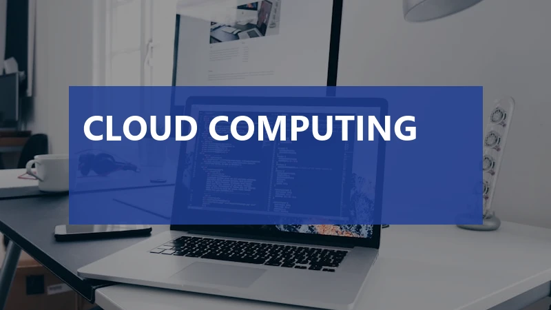

Cloud Computing Explained: IaaS, PaaS, and SaaS

Published: August 27, 2026 • Computer Fundamentals (Chapter 7)

1. The End of Physical Servers: A Historical Shift
If you wanted to start an internet company twenty years ago, you faced a massive, expensive problem before you could even write your first line of code. You had to buy physical servers. You had to rent a commercial office building to store them in. You had to pay for heavy-duty industrial air conditioning so they wouldn't melt. You had to hire a team of security guards to protect the building, and a team of specialized hardware engineers to fix the servers when their physical hard drives inevitably failed.
This model, known as "On-Premise" computing, was a massive financial barrier to entry. If you bought ten servers, and your website failed, you were left with ten useless, expensive pieces of metal. Conversely, if your website suddenly went viral and you needed one hundred servers, it would take weeks to order them, have them shipped, and plug them in. By the time they arrived, your website would have already crashed from the traffic, and your users would have abandoned you.
The tech industry needed a solution that allowed computing power to be turned on and off like water from a faucet. This need birthed the most significant technological paradigm shift of the 21st century: Cloud Computing. In this massive guide, we will break down exactly what the cloud is, the different ways you can use it (IaaS, PaaS, SaaS), and why it completely reshaped the global economy.
2. What Exactly is Cloud Computing?
Despite the poetic name, there is no actual "cloud." As the famous tech joke goes: "There is no cloud, it's just someone else's computer."
Cloud Computing is the delivery of computing services—including servers, storage, databases, networking, software, and analytics—over the Internet. Instead of buying and maintaining physical data centers yourself, you rent access to these services from a massive technology provider (like Amazon, Microsoft, or Google) on a "pay-as-you-go" basis.
Imagine these tech giants building data centers the size of football fields, filled with millions of top-tier servers, heavily guarded, perfectly cooled, and connected to the fastest undersea fiber-optic cables on earth. When you "use the cloud," you are simply paying a few cents per hour to borrow a tiny fraction of their massive, world-class infrastructure.
Because you only pay for exactly what you use, a college student in their dorm room now has access to the exact same supercomputing power that multi-billion-dollar banks use. If the student's app needs 500 servers for exactly ten minutes to process a complex AI calculation, they can rent them, run the calculation, and instantly return them, paying only for those ten minutes.
3. The "Pizza as a Service" Analogy
To understand the different models of cloud computing, engineers often use the famous "Pizza as a Service" analogy. If you want a pizza, you have several ways to get it, each requiring a different level of effort on your part.
- On-Premise (Doing everything yourself): You buy the flour, make the dough, grow the tomatoes, buy the cheese, build the oven, provide the gas, bake it, and serve it on your own dining table. You control 100% of the process, but it requires massive effort.
- IaaS (Infrastructure as a Service): You buy a frozen pizza from the supermarket. They provide the ingredients and the assembly. You just have to bring it home, provide the oven, the gas, and the dining table to bake and eat it.
- PaaS (Platform as a Service): You order a pizza for delivery. The restaurant provides the ingredients, the assembly, the oven, and the cooking. You just provide the dining table and the drinks at your house.
- SaaS (Software as a Service): You go eat at a pizzeria. They provide the ingredients, the cooking, the oven, the table, the drinks, and they even wash the dishes afterward. You just show up, consume the pizza, and pay the bill.
Now, let us translate this pizza analogy back into computer science.
4. IaaS: Infrastructure as a Service
IaaS is the most fundamental layer of cloud computing. In this model, the cloud provider simply gives you the raw, empty hardware over the internet. You are renting empty virtual servers, raw hard drive storage, and blank network connections.
With IaaS, the provider (like Amazon Web Services) guarantees that the physical computer will not break, the electricity will stay on, and the internet cable will not be cut. However, that is where their responsibility ends. You are completely responsible for installing the Operating System (Windows or Linux), installing the database, writing the code, and keeping the server safe from hackers.
Who uses it? System Administrators and large IT departments. They want total, root-level control over the servers to configure them exactly how they want, without having to physically buy the metal boxes.
Examples: Amazon EC2 (Elastic Compute Cloud), Google Compute Engine, Microsoft Azure Virtual Machines.
5. PaaS: Platform as a Service
PaaS sits one layer higher. In this model, the cloud provider not only gives you the hardware, but they also install and manage the Operating System, the web servers, and the database software for you.
As a developer using PaaS, you never see the actual "server." You do not know if it is running Windows or Linux, and you do not care. You simply write your application code (in Python, Node.js, or Java) on your laptop, and click a button to "upload" it to the platform. The PaaS takes your code, automatically spins up the necessary servers in the background, and makes your website live on the internet.
Who uses it? Software Developers. PaaS allows coders to focus 100% of their time on writing beautiful apps, rather than wasting time trying to figure out how to update Linux security patches or configure firewalls.
Examples: Heroku, AWS Elastic Beanstalk, Google App Engine, Vercel.
6. SaaS: Software as a Service
SaaS is the very top layer. This is the finished, fully-baked pizza. In this model, the cloud provider hosts the hardware, the operating system, the database, AND the final software application. The user does absolutely no coding, no server management, and no installation.
You simply open your web browser, navigate to a website, log in, and use the software. The software runs entirely on the provider's servers in the cloud, and you usually pay a monthly subscription fee per user.
Who uses it? Everyday consumers and business end-users. If you use a computer today, you are already using SaaS extensively.
Examples: Gmail, Netflix, Salesforce, Slack, Microsoft Office 365, Dropbox.
7. Public, Private, and Hybrid Clouds
Aside from the "Service" model (IaaS/PaaS/SaaS), cloud computing is also categorized by its "Deployment" model. Who actually owns the hardware, and who is allowed to use it?
- Public Cloud: This is what most people think of when they hear "cloud." The massive data centers are owned by third-party companies (Amazon, Microsoft). The hardware is shared among millions of different customers. Your data might physically sit on the exact same hard drive as a stranger's data, separated only by software encryption. It is the cheapest and most scalable option.
- Private Cloud: Some organizations, like top-secret government military branches or highly regulated international banks, are legally not allowed to put their data on public shared servers. Instead, they build a Private Cloud. They own the physical data center, but they use cloud software internally so their own employees can spin up virtual servers on demand. It offers ultimate security, but at a massive financial cost.
- Hybrid Cloud: The most common approach for large corporations. They keep their highly sensitive, classified data (like customer credit card numbers) in their own on-premise Private Cloud, but they use the Public Cloud to host their public-facing website and process non-sensitive analytics. The two clouds are connected via highly encrypted VPN tunnels.
8. The Big Three: AWS, Azure, and Google Cloud
The global public cloud market is absolutely massive, generating hundreds of billions of dollars annually. It is essentially an oligopoly, dominated by three colossal American tech giants:
AWS (Amazon Web Services)
Amazon invented the modern cloud industry. Around 2006, they realized they had massive amounts of unused server capacity sitting idle during non-holiday seasons, so they started renting it out. Because they had a massive head start, AWS is the undisputed king of the cloud, holding around 33% of the global market share. It offers the most features, the largest global footprint, and is the default choice for most startups (including Netflix and Airbnb).
Microsoft Azure
Microsoft leveraged its decades-long dominance in corporate office software to build Azure. Holding around 22% of the market, Azure is the darling of the "Enterprise" world. If a massive, traditional Fortune 500 company already uses Microsoft Windows, Office 365, and Active Directory, it is incredibly easy for them to transition their servers into Microsoft Azure. It is known for exceptional hybrid-cloud integration.
Google Cloud Platform (GCP)
Google holds the third-place spot with around 11% market share. While smaller, it is highly respected by hardcore software engineers. Because Google built the infrastructure that powers Google Search and YouTube, GCP is renowned for offering the absolute best tools in the world for Big Data analytics, Machine Learning, Artificial Intelligence, and Kubernetes (container management).
9. The Massive Advantages of the Cloud
Why did the entire world abandon physical servers for the cloud? The benefits are staggering:
- CAPEX to OPEX: You no longer have to spend $100,000 upfront (Capital Expenditure) to buy servers. Instead, you pay a $500 monthly bill (Operational Expenditure), keeping your cash flow healthy.
- Infinite Scalability (Elasticity): If your website gets featured on the news and traffic spikes by 10,000%, the cloud can automatically detect the traffic and spin up a hundred new servers in seconds to handle the load. When the traffic dies down, it deletes those servers, ensuring you don't pay for idle time.
- Global Reach: With a few clicks, you can deploy your application to data centers in Tokyo, London, Sydney, and New York simultaneously, ensuring users around the world get lightning-fast loading speeds.
- Disaster Recovery: If an earthquake destroys your office building, your data is perfectly safe, backed up across multiple geographically isolated cloud data centers. You simply buy a new laptop, log in, and continue working.
10. The Risks and Disadvantages
However, the cloud is not a flawless utopia. It comes with significant risks that engineers must mitigate:
- Vendor Lock-in: If you spend five years building your entire software architecture using highly specific AWS tools, it becomes technically and financially devastating to try and move that software over to Google Cloud later. You become a captive customer to Amazon.
- The Shared Responsibility Model: Cloud providers guarantee the security of the cloud (the physical buildings, the hardware). But you are responsible for security in the cloud. If you accidentally configure your AWS database to be publicly readable without a password, hackers will steal your data, and Amazon will not take the blame.
- Unpredictable Costs: Because the cloud automatically scales up when traffic hits, a poorly written piece of code stuck in an infinite loop can accidentally spin up hundreds of servers overnight, resulting in a shocking $50,000 bill at the end of the month.
11. The Next Frontier: Edge Computing
As fast as the cloud is, it is bound by the laws of physics. Data travels at the speed of light. If a self-driving car in California needs to slam on the brakes, it cannot wait 150 milliseconds for its data to travel to a cloud server in Virginia for processing and back. That delay is fatal.
To solve this, the industry is pushing toward Edge Computing. Instead of sending data back to a massive, centralized cloud data center, Edge Computing places tiny, powerful mini-servers as close to the user as possible (e.g., at the base of a 5G cell tower, or inside the car itself). The cloud will still exist to train the AI models and store historical data, but the split-second, real-time decisions will be made on the "Edge" of the network, creating a faster, more responsive world.
12. The Evolution: Serverless Computing
While IaaS, PaaS, and SaaS defined the first decade of cloud computing, a massive new trend has emerged: Serverless Computing (also known as Function as a Service, or FaaS).
Despite the name, there are still physical servers involved. The term "Serverless" simply means the developer spends exactly zero seconds thinking about them. In a traditional PaaS model, your application is constantly running 24/7, waiting for a user to click a button, and you pay for that server to be on all month long.
In a Serverless model (like AWS Lambda or Google Cloud Functions), you upload a tiny snippet of code (a single function). The code sits completely dormant and costs you absolutely nothing. When a user clicks a button on your website, the cloud provider instantly wakes up your code, executes the calculation in a few milliseconds, and immediately shuts it back down. You only pay for the exact milliseconds your code was actively executing. If nobody visits your website for a month, your server bill is exactly $0.00. This hyper-efficient model is rapidly becoming the gold standard for building modern, cost-effective internet applications.
13. Conclusion: The Foundation of Modern Tech
Cloud Computing is the silent engine driving the modern world. Every time you stream a movie, hail a ride-sharing car, or deposit a check via your banking app, you are interacting with massive, invisible data centers humming in the background.
Understanding the difference between IaaS, PaaS, and SaaS allows you to understand how modern businesses operate. The era of the physical, on-premise server room is largely over, replaced by an era of infinite, elastic, pay-as-you-go computing power. As we move into the age of Artificial Intelligence and Big Data, the cloud will only become more integrated into the fabric of our daily lives.
Written by Himanshu Tyagi
Founder of TyagiHub. Dedicated to demystifying the most complex topics in computer science and software engineering for the next generation of technologists.
Read full author profile →